Architecture-Based Approaches in Continual Learning
Introduction
Problem Definition
Continual Learning (CL): learning a sequence of tasks \(t=1,\cdots,N\) in order, with datasets \(D^t=\{x^t, y^t\}\)
Task-Incremental Learning (TIL): continual learning scenario, aim to train a model 𝑓 that performs well on all learned tasks
\[\max_𝑓 \sum_{t=1}^N \text{metric}(𝑓(x^t), y^t), \{x^t, y^t\} \in D^t\]
Key assumptions when training and testing task \(t\):
- No access to the whole data from previous tasks \(1,\cdots,t−1\)
- Testing on all seen tasks \(1,\cdots,t\)
- For TIL testing, task ID \(t\) of each test sample is known by the model. Otherwise, it is task-agnostic testing
Existing Approaches for TIL
Replay-based Approaches
- Prevent forgetting by storing parts of the data from previous tasks
- Replay algorithms use them to consolidate previous knowledge
Regularization-based Approaches
- Add regularization terms constructed using information about previous tasks to the loss function when training new tasks
Architecture-based Approaches
- Dedicate network parameters in different parts of the network to different tasks
- Keep the parameters for previous tasks from being significantly changed
Existing Approaches for TIL
Optimization-based Approaches
- Explicitly design and manipulate the optimization step
- For example, project the gradient not to interfere previous tasks
Representation-based Approaches
- Use special architecture or training procedure to create powerful representations
- Inspired from self-supervised learning, large-scale pre-training like LLMs
Architecture-based Approaches
Architecture-based Approaches
- Leverages the separability characteristic of the neural network architecture
- Treat the network as decomposable resources for tasks, rather than as a whole
- Dedicate different parts of a neural network to different tasks to minimize the inter-task interference
- Focus on reducing representational overlap between tasks
The “part” of a network can be regarded in various ways:
- Modular Networks: play around network modules like layers, blocks
- Parameter Allocation: allocate group of parameters or neurons to task as a subnet
- Model Decomposition: decompose network from various aspects into shared and task-specific components
Modular Networks: Progessive Networks
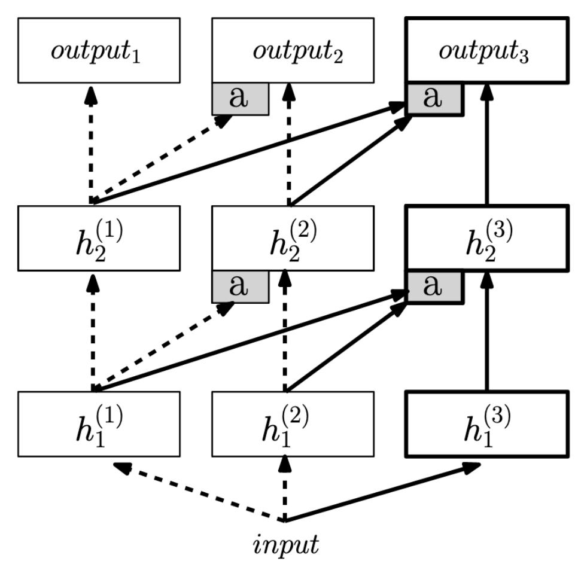
Progressive Networks, 2016
- Expand the network with new column module for each new task
- Linearly increasing model memory
- Similar to independent training: train a independent network for each task
Modular Networks: Progessive Networks
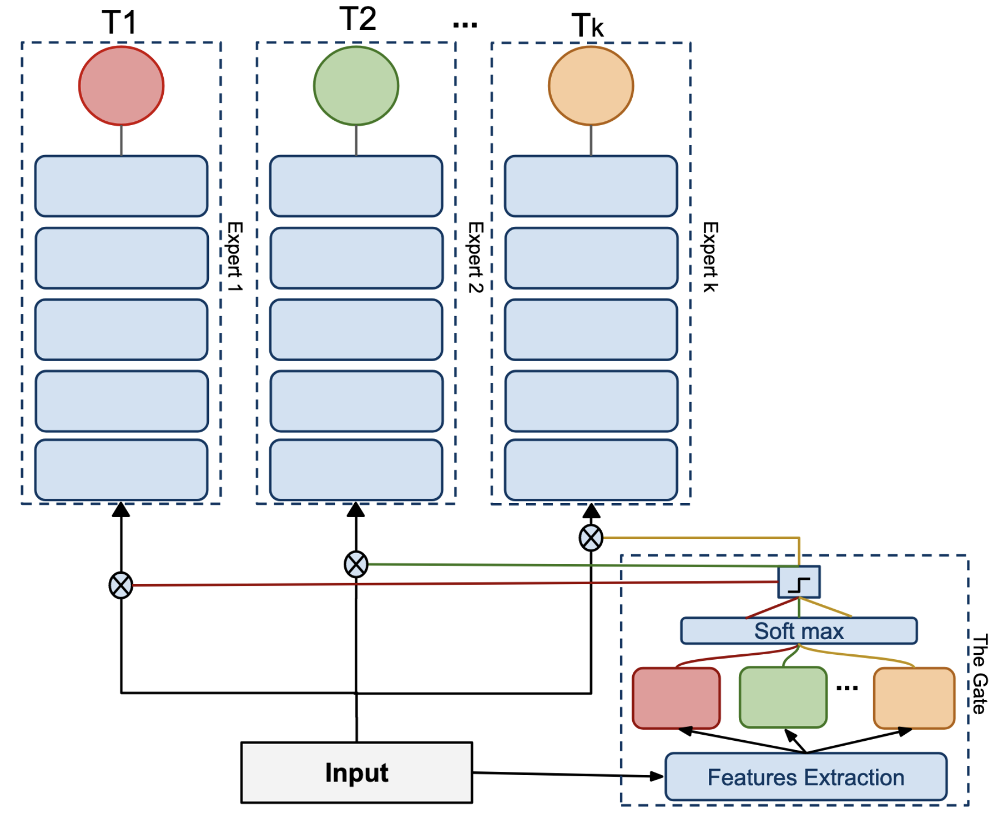
Expert Gate, 2017
- A new independent expert (network) for each new task
- Similar to independent training but work in task-agnostic testing
- A gate works as the task ID selector at test time
- The gate is a network learned through the task sequence
Modular Networks: PathNet
PathNet, 2017
- Prepare a large pool of modules for the algorithm to select from
- Several options in each module position, concatenated and form a subnet for a task
- Choose the path by tournament genetic algorithm between different paths during the training of a task
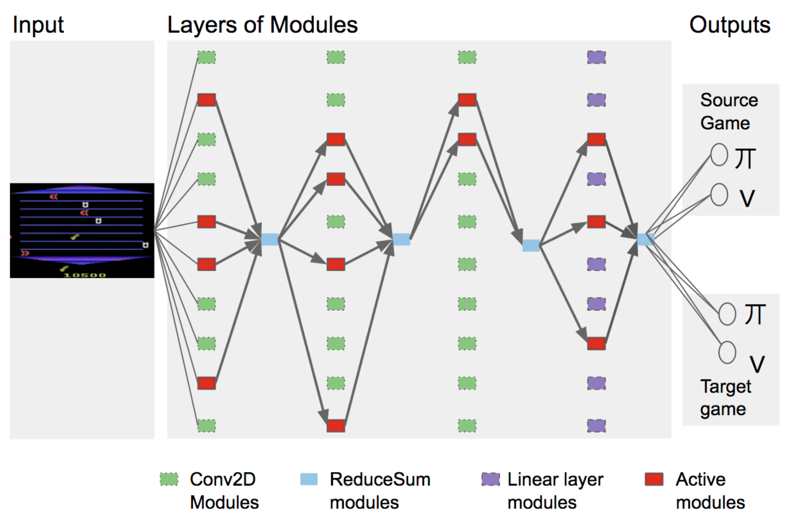
Parameter Allocation: Overview
Parameter Allocation
- Refines the level of modules to parameters or neurons
- Selects a collection of parameters or neurons to allocate to each task
- Also forms a subnet for the task
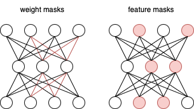
Parameter Allocation: Overview
- Weight masks are way greater than feature masks in scale
- Should keep a decent amount of neurons in each layer
Parameter Allocation methods differ in ways:
- Methods to allocate
- Manually set through hyperparameters
- Learned together with the learning process
- Application of masks during training
- Forward pass
- Backward pass
- Parameter update step
- Application of masks during testing
- Most methods fix the selected subnet after trained on their belonged task and use it as the only model to predict for that task during testing
Parameter Allocation: PackNet
PackNet, 2018
- Select non-overlapping weight masks and allocate them to tasks
- Fix masked parameters once trained until testing using the subnet
- Post-hoc selection by pruning (by absolute values of weights) after training
- Retraining after pruning as network structure changes
- Manually allocation by percentage hyperparameters
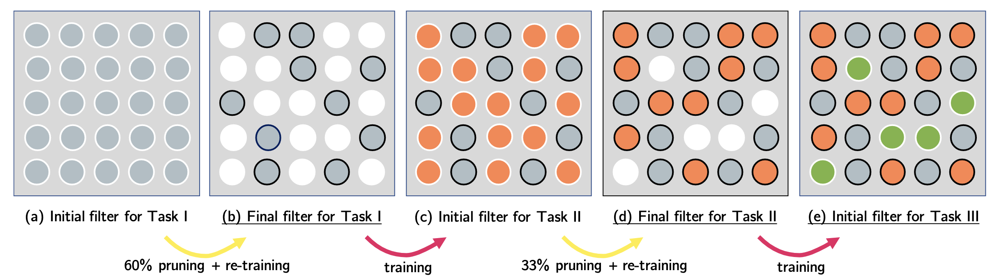
Parameter Allocation: DEN
DEN (Dynamically Expandable Networks), 2018
- Find the important neurons as feature masks for testing, and duplicate
- Find by training with equally L2 regularisation, whose connected parameters change a lot are important
- Dynamic network expansion when performance can’t be improved, prune after
- The training selects their own important neurons by L1 regularised training, then only train them by L2 regularisation
- Manually allocation by threshold hyperparameters, slightly better than percentage
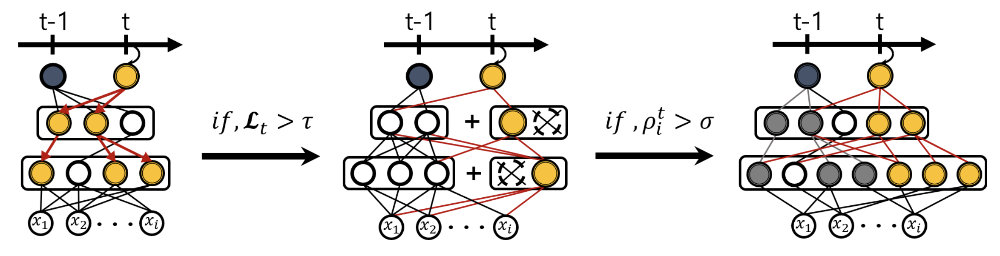
Parameter Allocation: Piggyback
Piggyback, 2018
- Learnable allocation: binary masks are gated from real values which is differentiable and can be learned together with parameters
- Still binary during test
- Sacrifices with the network parameters fixed, reduced representation ability
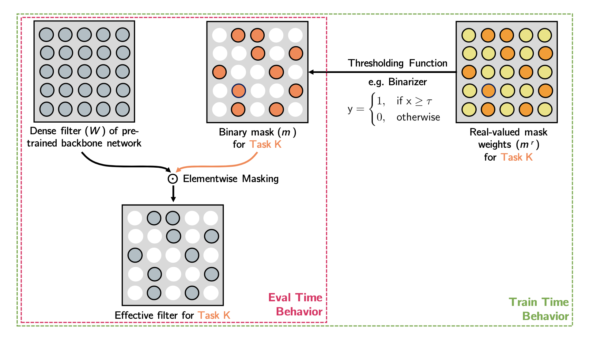
SupSup, 2020
- Extends to task-agnostic testing
Parameter Allocation: HAT
HAT (Hard Attention to the Task), 2018
- Masks and parameters are both learnable
- Fix masked parameters once trained until testing using the subnet
- Sparsity regularization for masks
AdaHAT, 2024 (my work)
- Allow minor adaptive adjustment to masked parameters
Parameter Allocation: CPG
CPG (Compacting, Picking and Growing), 2019
- Post-hoc pruning and retraining + network expanding + learnable masks (on previous weights)
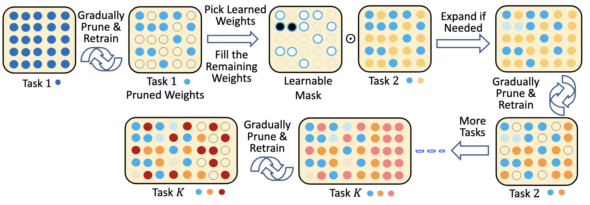
Parameter Allocation: UCL
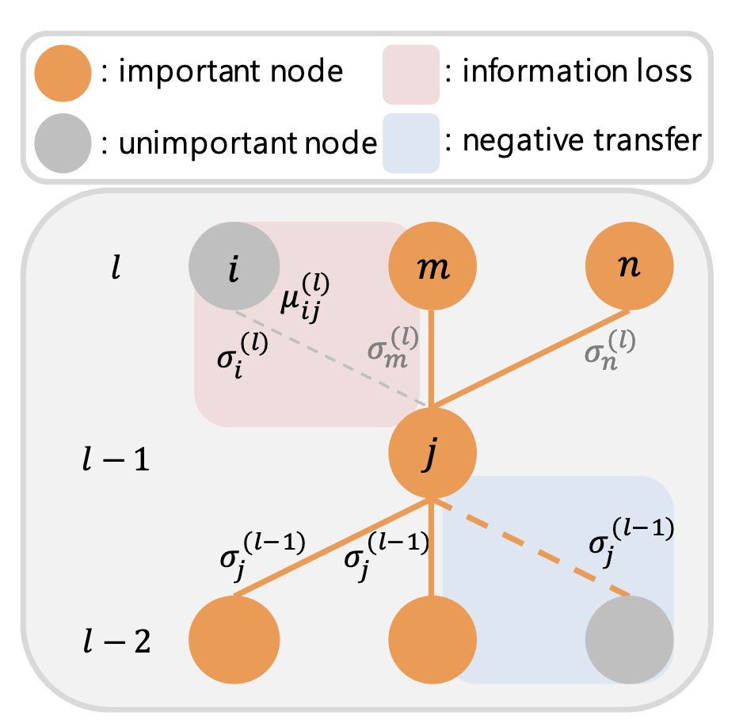
UCL (Uncertainty-based Continual Learning), 2019
- Identify the important neurons by uncertainty measure derived from Bayesian learning theory
- Apply different regularisation to the weights by neuron importance
- the important neurons only work in training
- The identification of important neurons is soft controlled by coefficient hyperparameters (\(\sigma_{\text{init}}\)) in the regularisation terms
- More like a regularisation-based but incorporate architecture-based ideas
Model Decomposition: ACL
ACL (Adversarial Continual Learning), 2020
- Shared and task-specific, modules, features
- Shared module is adversarially trained with the discriminator to generate task-invariant features. The discriminator predicts task labels
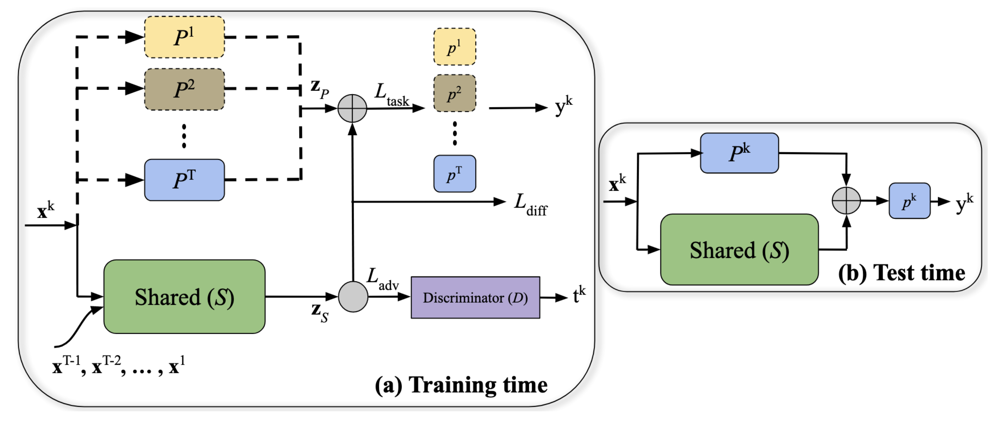
Model Decomposition: APD
APD (Additive Parameter Decomposition), 2020
- Decomposes the parameter matrix of a layer mathematically:
\[\theta_t =\sigma \odot \mathcal{M}_t + \tau_t, \mathcal{M}_t = \text{Sigmoid}(\mathbf{v}_t)\]
- Apply different regularisation strategies to shared \(\sigma\) and task-specific \(\tau_t, \mathbf{v}_t\)
\[ \underset{\boldsymbol{\sigma}, \boldsymbol{\tau}_t, \mathbf{v}_t}{\operatorname{min}} \mathcal{L}\left(\left\{\boldsymbol{\sigma} \otimes \mathcal{M}_t+\boldsymbol{\tau}_t\right\} ; \mathcal{D}_t\right)+\lambda_1\left\|\boldsymbol{\tau}_t\right\|_1+\lambda_2\left\|\boldsymbol{\sigma}-\boldsymbol{\sigma}^{(t-1)}\right\|_2^2 \]
- Shared parameters \(\sigma\) not deviate far from the previous
- The capacity of task-specific \(\tau_t\) to be as small as possible, by making it sparse
Model Decomposition: PGMA
PGMA (Parameter Generation and Model Adaptation), 2019
- Task-specific parameters \(p_t\) are generated by DPG (dynamic parameter generator)
- Shared parameters \(\theta_0\) (in solver \(S\)) adapt itself to task \(t\) with the generated task-specific \(p_t\)
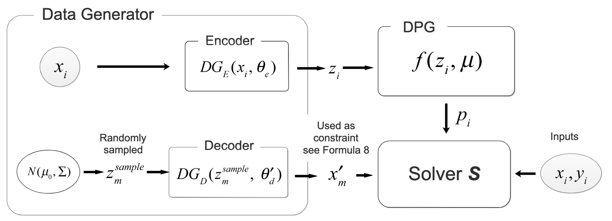
Challenges
Challenge: Network Capacity and Plasticity
Network Capacity Problem
- Any fixed model will eventually get full and lead to the performance drop, given the potentially infinite task sequence
- Become explicit in architecture-based approaches
- Can be solved by taking shortcuts to expand the networks, but it is not fair
Stability-Plasticity Trade-Off
- Continual learning seeks to trade off the balance between stability and plasticity
- Approaches that fix part of model for previous tasks are lack of plasticity by stressing too much stability
- Others whichever has task shared components still face the classic catastrophic forgetting problem, which is a result of lack of stability
- They both lead to a bad average performance
Thank You
Thank you for your attention!
Please feel free to ask any questions.
Check out the post in my blog for complete narratives of this pre!